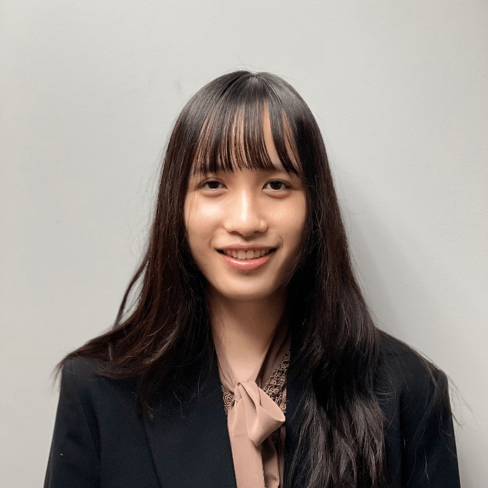

Home
My name is Erin Cheng, and I am a senior undergraduate student at Boston University. I am majoring in Business Administration, with a concentration in Information Systems. Additionally, I have minors in both Economics and Computer Science. This multidisciplinary approach to my education reflects my keen interest in understanding the broader economic context of business decisions, as well as developing technical skills in computer science. After working as a research assistant in Finance, I have developed a strong interest in analytical work, and hope to forge a career in data analytics moving forward. On my free time, I enjoy a variety of artistic and athletic hobbies, including cello, guitar, photography, and running.
Welcome to my website, here you will find my Educational and my Employment history; as well as other information that might be of interest to you.